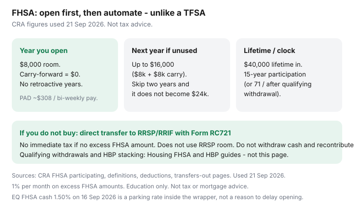

Personal Finance · Canada
How to Automate FHSA Contributions in Canada Without Missing Carry-Forward Room
An FHSA does not start the clock — or the room — because you meant to open one. CRA participation room in the year you open your first FHSA is $8,000. If you wait until November 2027 to open, you do not collect 2024–2026 room retroactively. Unused room carries forward only one year, capped at $8,000, so the most you generally see in a later year is $16,000. That is the opposite of a TFSA, where unused room piles up indefinitely.
This page is Personal Finance plumbing: open, automate, respect carry-forward, watch the 15-year participation period, and know the RRSP transfer off-ramp. Housing already published the FHSA how-to and Home Buyers’ Plan down-payment map. Use those for qualifying withdrawals and stacking. Date-stamped 21 Sep 2026.
Disclosure: Brokerage FHSA offers are an offer type. Saving Optimizer may later add partner links. We do not currently claim issuer partnerships. This is education, not tax, legal, or mortgage advice. Confirm eligibility and room on CRA FHSA pages and in My Account. Qualifying home rules live on the Housing guides.
Key takeaways
- Open first. No account, no room. First-year participation room is $8,000.
- Annual increment $8,000; lifetime contributions/transfers in $40,000. Over-contribution: 1% per month on the excess FHSA amount.
- Carry-forward: unused participation room to the next year only, max $8,000 of carry-forward — typical max in a year is $16,000 if you had an account last year and contributed nothing.
- Payday PAD ≈ $8,000 ÷ pays remaining (about $308 bi-weekly if you start 1 January with $8,000 room).
- Maximum participation period is generally 15 years from opening (or the year you turn 71, or the end of the year after the first qualifying withdrawal). Unused funds can move to an RRSP/RRIF by direct transfer (Form RC721) without using RRSP room if you have no excess FHSA amount.
Open early: room does not start until the account exists
CRA: in the year you open your first FHSA, participation room is $8,000. Carry-forward in that year is $0. Eligibility to open (resident, age of majority, first-time home buyer tests including the four-calendar-year lookback with a spouse) is on CRA’s FHSA landing page and in the Housing how-to. The Personal Finance mistake is waiting for a “better brokerage promo” until December, then contributing $8,000 on the 30th and assuming 2025’s unused mythical room is still there. It never existed.
If you are even reasonably likely to buy a first home in the next 15 years, opening with $0 is still how room begins. You can automate later. You cannot backdate the open.
Annual and lifetime limits—verify live CRA figures at draft
Used 21 Sep 2026 from CRA participating / definitions / deduction pages:
| Rail | 2026 figure | What it means for automation |
|---|---|---|
| Annual participation room increment | $8,000 | The yearly “new” room after you have opened |
| Lifetime FHSA limit | $40,000 | Contributions plus RRSP-to-FHSA transfers. Five full $8,000 years fill it if you start immediately. |
| Carry-forward into a later year | Max $8,000 | Does not compound. Skip two years after opening and you still only pick up one year of unused room. |
| Typical max in one calendar year | $16,000 | $8,000 new + $8,000 carry-forward, if last year was unused and the account existed |
| Deductibility | Up to $40,000 lifetime deductions | You can delay the deduction (like an RRSP). Transfers in from an RRSP are not deductible and do not restore RRSP room. |
EQ Bank listed an FHSA cash savings rate of 1.50% on 16 Sep 2026 — useful if you want cash in the wrapper, not a reason to delay opening. A brokerage FHSA is the usual long-run sleeve; this page will not pick ETFs.
Carry-forward: max one year of unused room (unlike TFSA)
TFSA unused room accumulates for life. FHSA unused participation room becomes carry-forward of at most $8,000 into the following year (CRA definitions: FHSA carryforward is the least of $8,000 and last year’s unused, and $0 in the year you open). Skip 2026 entirely after opening in 2025 with $0 contributed, and 2026 room can be $16,000. Skip 2026 and 2027, and 2028 does not become $24,000. That is the trap eligible savers hit when they “wait until we have a down payment saved in chequing first.”
Scotiabank’s public explainer matches the $16,000 cap in a given year. Use CRA My Account’s FHSA participation-room statement after you have filed Schedule 15 once.

Payday automation sized to the annual cap
If room is $8,000 and you are paid bi-weekly: $8,000 ÷ 26 ≈ $308. Monthly: ≈ $667. Start the PAD one business day after payroll, same as pay yourself first. If you opened mid-year with $8,000 still available, divide by pays left, not by 26 — otherwise you finish the year under-contributed and dump the rest into a January that already has a new $8,000 (which is fine) while last year’s leftover may still carry forward if unused.
Pause the PAD when you hit the year’s participation room. Unlike a TFSA HISA, “a bit extra” is an excess FHSA amount. Direct RRSP-to-FHSA transfers also use participation room (Form RC720) and are not a second deductible contribution.
Track the 15-year clock and qualifying withdrawal rules at a high level
CRA: the account must generally be closed by 31 December of the 15th year after opening, or the year you turn 71, or 31 December of the year after your first qualifying withdrawal — whichever comes first. A qualifying withdrawal (first-home conditions, written agreement, occupancy timelines) is the Housing article’s job. Personal Finance job: put the open date on a calendar titled “FHSA latest close,” and do not treat the wrapper as a forever TFSA.
After a qualifying withdrawal you generally cannot open another FHSA later. That is another reason not to open as a lark if you already own. If you are unsure about the first-time-buyer test, read CRA and the Housing how-to before you start the 15-year clock.
If plans change: tax-free transfer pathway to RRSP (mechanics overview)
CRA withdrawals-and-transfers-out page: you may directly transfer FHSA property to your RRSP or RRIF with no immediate tax if you have no excess FHSA amount. Use Form RC721. The transfer does not use RRSP contribution room and does not restore FHSA lifetime room. If you withdraw cash yourself and then contribute to an RRSP, that is a taxable FHSA withdrawal plus a new RRSP contribution — the wrong path.
This is why some households still open an FHSA even if the home purchase is uncertain: deductible contributions now, and an RRSP-shaped landing pad later, without spending RRSP room on the transfer. It is not free — you used the 15-year clock and the lifetime $40,000. It is a mechanic, not a loophole to market as a “secret RRSP.”
Pair with HBP only after you have read the Housing HBP page; CRA allows both on the same qualifying home if each program’s conditions are met at withdrawal time.
Sources & date stamps
- CRA, Participating in your FHSAs — $8,000 room in the year you open; carry-forward formula (used 21 Sep 2026).
- CRA, Definitions for FHSAs — annual limit, carryforward cap $8,000, lifetime $40,000.
- CRA, Tax deductions for FHSA contributions — lifetime $40,000 deductible; RRSP-to-FHSA transfers not deductible.
- CRA, Withdrawals and transfers out — direct RRSP/RRIF transfer, Form RC721; taxable if you withdraw personally.
- EQ Bank rates 16 Sep 2026 — FHSA cash 1.50%.
- Saving Optimizer Housing — FHSA how-to and HBP pages for qualifying withdrawals and stacking.
Frequently asked questions
If I open an FHSA in 2026, do I get 2023–2025 room?
No. Participation room starts the year the first FHSA is opened. CRA sets that year’s room at $8,000. There is no retroactive catch-up for years before the account existed.
How much can I contribute in 2026 if I opened in 2025 and contributed nothing?
Often up to $16,000: $8,000 of 2026 room plus up to $8,000 carry-forward. Confirm on your FHSA participation-room statement. It will not be $24,000.
Is the FHSA contribution deadline like an RRSP (first 60 days)?
FHSA contributions are a calendar-year system, not the RRSP first-60-days deduction window. Contribute by 31 December for that year’s participation room. You can delay claiming the deduction on the return. Do not mix the two calendars.
What if we do not buy a home?
Direct-transfer remaining FHSA property to your RRSP or RRIF with Form RC721 before the account must close. That transfer does not use RRSP room if done correctly and you have no excess. A cash withdrawal is taxable. See CRA’s transfers-out page.
Should this replace the Housing FHSA guide?
No. This page is automation and carry-forward mechanics. Qualifying withdrawals, first-time-buyer tests, and HBP stacking are in the Housing FHSA how-to and HBP articles.